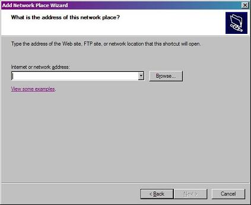
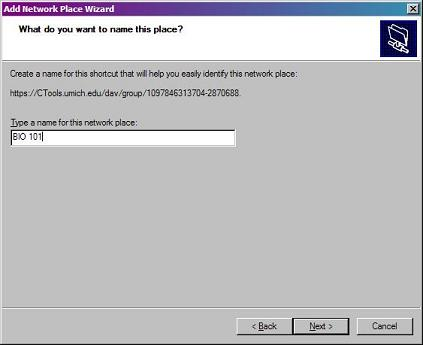
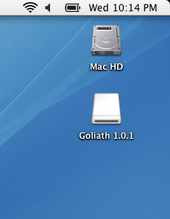

複数リソースのアップロード・ダウンロード
説明
Sakai では，リソースツールの「追加」ボタンを使用することにより，自分のローカルシステムからマイワークスペースあるいはクラスリソースにファイルをコピーすることができます．
複数のファイルやフォルダごと一度にコピーしたい場合は，WebDAV と呼ばれるソフトウェアを使用して，ファイルやフォルダを自分のローカルコンピュータと Sakai 内の「リソース」フォルダの間でやり取りすることができます．
自分のコンピュータを Sakai に認識させ，自分のコンピュータ上のフォルダを「Sakai リソース」フォルダとして扱わさせるためには，いくつかのセットアップステップが必要になります．
Web DAV を使ってある特定の Sakai クラスリソースフォルダまたはグループリソースフォルダをセットアップすると，クラスリソースエリアまたはグループリソースエリアと自分のローカルコンピュータとの間でファイルやフォルダをドラッグアンドドロップでやり取りすることができるようになります．
ただし，これらの接続は使用しているコンピュータに特有のもので，使用するコンピュータを変更した場合は再度接続をセットアップする必要があることには注意してください．
自分のサイト ID
Sakai サイトはそれぞれ固有のサイト ID をもっています．このサイトのサイト ID は上に一覧表示されています．サイト ID は WebDAV を通じて接続するために必要となるアドレスの一部になるため，サイト ID を知っておく必要があります．各サイトは，異なる WebDAV 接続としてセットアップされますので，サイトに初めて接続する時にサイトごとに，以下の手順に従う必要があります．
Windows 用の WebDAV 設定
これは，サイトとの間でファイルを転送するために WebDAV を使用する前に，Sakai の各サイトごとに一度ずつ行う必要があります．
- 自分の PC デスクトップ上の「マイネットワークプレース」アイコンをクリックし「ネットワークプレース」フォルダを開きます．
- 「ネットワークプレースを追加」アイコンをクリックします．
- 「次」をクリックします．
- 一番下の「他のネットワークを選ぶ」をクリックします．
- 「次」をクリックします．
-
「ネットワークプレースの場所」フィールドに，上で示されたこのサイトの URL をタイプします．

-
次をクリックします．
注意: 「入力したフォルダは有効なものではないようです」のような警告が表示される場合は，まだサイトにリソースがない可能性があります．サイトへ行って，「リソース」フォルダを初期化するためにファイルを一つ追加し，その後，ステップ1に戻ります．
- ユーザ名とパスワードを訊かれたら，Sakai のユーザ名とパスワードを入力します．
-
追加しようとしているプロジェクトリソースあるいはクラスリソースの名前を入力します．この名前は，プロジェクトリソースフォルダあるいはクラスリソースフォルダを参照する際に自分のコンピュータ上で使用されます．
- 「終了」をクリックしセットアップを完了します．
-
セットアップが完了すると，暮らすリソースフォルダあるいはプロジェクトリソースフォルダが「マイワークプレース」にフォルダとして表示されます．
Windows Explorer の「マイネットワークプレース」の下にも表示され，他のフォルダと同じように扱うことができます．

- これで，自分のコンピュータと Sakai リソースフォルダとの間でファイルやフォルダをドラッグアンドドロップすることができます．
-
追加しようとしているグループリソースまたはクラスリソースの名前を入力します．この名前は，クラスリソースフォルダあるいはグループリソースフォルダを参照する際に自分のシステムで使用されます．
- ボタンをクリックしてセットアップを完了します．
Mac 用の WebDAV 設定 (OS 10.0 - 10.3)
注意 : この説明には，Goliath という名前のプログラムのダウンロードが含まれています．Goliath を Sakai で使用すると，「新規フォルダを作成できない」「自分のローカルコンピュータにフォルダをダウンロードできない」というエラーがユーザから報告されています．
これは，サイトとの間でファイルを転送するために WebDAV を使用する前に，Sakai の各サイトごとに一度ずつ行う必要があります．
-
次のサイトから Goliath WebDAV クライアントをダウンロードします:
http://www.webdav.org/goliath/#download
-
ファイルを解凍し，.dmg ファイルをダブルクリックします(Stuffit のバージョンや設定によっては，ディスクイメージが自動的にマウントされる場合があります)．
-
"Goliath 1.0" という名前のディスクイメージが利用可能になるはずです．ディスクイメージ内の Goliath フォルダをハードディスクにドラッグアンドドロップします．

- Goliath アプリケーションを開きます．通常，アプリケーションフォルダにあります．
- WebDAV 接続ダイアログボックスにおいて，上で示されたようにパスを入力します．
- ユーザ名とパスワードを入力します．
- 「詳細設定」タブをクリックし，「マッキントッシュリソースのエンコーディングを無効にする」の横のボッックスをチェックします．
- 「OK」をクリックします．
-
Sakai サイト内にリソースがあることを表すウィンドウが Mac 画面に表示されます．これで，ファイルをこのウィンドウにドラッグアンドドロップするか，ファイルをアップロードしたりダウンロードしたりするために「ウェブ」メニューを使用します．
Mac 用の WebDAV 設定 (OS 10.4)
これは，サイトとの間でファイルを転送するために WebDAV を使用する前に，Sakai の各サイトごとに一度ずつ行う必要があります．
- ファインダから，メニューバーの「移動」を選択し，「サーバへ接続...」を選択します．
- 表示されたダイアログボックスに，上で示されたようにパスを入力します．
- 「+」ボタンをクリックし次回利用するためにこのパスを保存します．
- 「接続」をクリックします．
- ユーゼ名とパスワードを入力し，「OK」をクリックします．
-
CTools サイトにリソースを表すウィンドウがマッキントッシュ画面に表示されます．ファイルをこのウィンドウにドラッグアンドドロップしたり，「ゴミ箱」にドラッグすることによりファイルを削除したりすることができます．